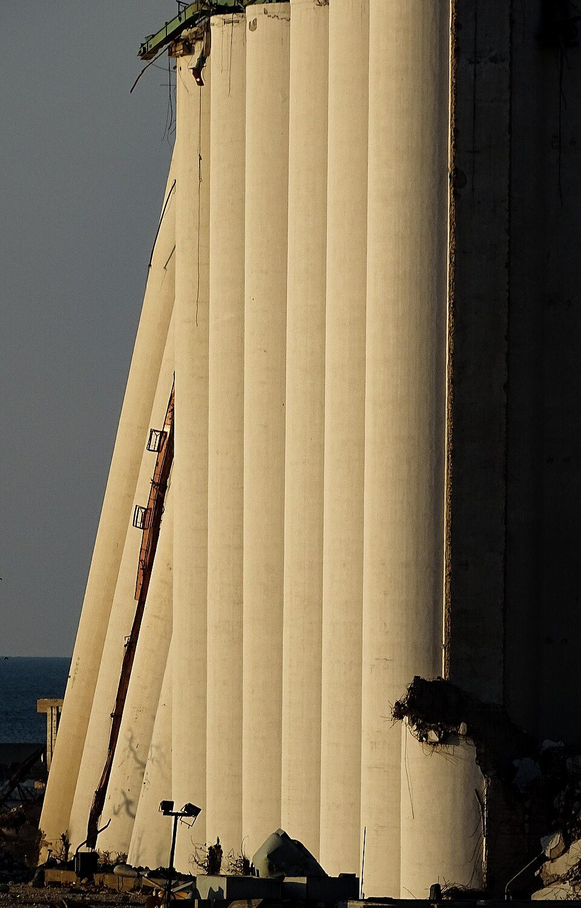

One word, five speakers, twenty-three years. How Beirut’s heritage debates kept
reaching for the same metaphor, and how it sharpened every time the speaker
stood closer to violence that had not been resolved.
Hasnaa Abdalla · Erasmus University Rotterdam, 2026
Beit Beirut, the Yellow HouseBuilt 1924 · Sodeco, on the former Green Line

Beirut Port Grain SilosBuilt 1970 · after 4 August 2020
Hover or tap a photograph to bring it back
In Beirut, two damaged buildings have outlived the plans to demolish them. Beit Beirut,
a 1924 apartment house on the Civil War’s Green Line that snipers used as a nest for
fifteen years, reopened in 2017 as a museum with its bullet holes intact. The Port Grain
Silos, forty-eight concrete towers that absorbed much of the 4 August 2020 explosion,
still stand half-broken over the waterfront, under repeated demolition orders.
Across sixteen primary sources about these two sites, one word keeps coming back:
amnesia. It appears in a governor’s speech, an architect’s interviews, an
international heritage alert, an urban planner’s essay and a grieving mother’s words.
It is the same word each time, but it does not mean the same thing.
Scroll to follow the word. The chart tracks two things at once: how far back
each speaker is reaching to the violence they describe, and how much political
charge the word carries in their mouth.
Beit Beirut · Civil War, 1975–1990
speakerreach back to the violenceI–IVpolitical charge
2002
Governor Sarraf Governor of Beirut · expropriation speech
I Amnesia as a force: actorless
Heritage destroyed is “a space for memory so as not to
be swept up
by amnesia.”
Nobody forgets here. Amnesia acts on the city the way a flood
would, and the sentence has no room for anyone who might be causing it.
When the Municipality announced the expropriation of the Barakat Building, twelve years
after the war’s end, the governor introduced a metaphor that would travel through the next
twenty-three years of debate. In his speech amnesia is passive and almost weather-like. It is
unfortunate and inevitable, and nobody is responsible for it.
How this source was coded
Distance
Long · 12 years after 1990
Closure
War formally ended; accountability absent
Voice
Official
Framing
Mixed
S1 · Sarraf (2002–03), via Brones (2012), pp. 14–15
2012
Mona El Hallak Architect and heritage activist · Planisphere interview
II Amnesia as a condition: structural
“The general amnesiaof Lebanon.”
Amnesia now has an owner, the nation, and Hallak can list its
causes. But it is still described as a national condition rather than as someone’s decision.
Hallak had been fighting for the building since 1994. She still uses Sarraf’s word, but
the amnesia is bigger now and has a structure. She names where it comes from:
1989 Taif Accord
1991 Amnesty law
1990s SOLIDERE demolitions
— Civil War left out of school curricula
“Not one apology has been made in twenty-two years.” Even so, she makes a
deliberate trade-off for the museum: “No names. No parties. No militias.” With the
accountability window sealed since 1991, the demand for justice is kept in the building’s
scars instead of being spoken aloud.
How this source was coded
Distance
Long · 22 years after 1990
Closure
Accountability absent
Voice
Postmemory
Framing
Mixed, with present-tense proximity
S6 · El Hallak (2012), The Planisphere · 32 coded quotations
2022
Two voices, one year Two years after the port explosion
III Amnesia as a choice: deliberate
The Cabinet orders the silos demolished in April. In August, the northern section collapses.
In the same year, two very different institutions use the word from opposite positions.
ICOMOS Heritage Alert · August
“Demolishing the silos,
removing this landmark, and creating a physical void will give the impression of an
absence of space and only serve to enhance
psychological amnesia.”
Mona Fawaz Beirut Urban Lab · DAWN, May
“Deliberate or
forcedamnesia.”
She names who did the forgetting: “warlords-turned-statesmen.”
For the first time, the sentence has an actor. For ICOMOS,
amnesia is the psychological result of a state decision. For Fawaz, the single word
“deliberate” turns forgetting into something somebody chose.
Annie Vartivarian Mother of a victim of the explosion · The National
IV Amnesia as not resilience
“As Lebanese, we talk about
resilience and moving on, but there is resilience,
and then there is amnesia.”
“We” takes in the speaker and her listeners. The sentence takes
apart a virtue Lebanon tells itself it has: forgetting and calling it resilience is not
resilience at all.
Annie Vartivarian lost her daughter in the 2020 explosion and a cousin in the Civil War.
Her words, quoted in coverage of the Freedom Recalled exhibition held inside
Beit Beirut, are the last stage of the trajectory. The museum built to remember one war was
now hosting the debate about the second disaster.
She stands closest to the violence of anyone in this sequence, at five years,
and she also reaches furthest back, to 1990. Her source is the only one coded as speaking
from both distances at once.
How this source was coded
Distance
Mixed · 5 and 35 years
Closure
Accountability absent
Voice
Victim family
Framing
Proximity
S10 · McKelvey (2025), The National · 13 coded quotations
2002 → 2025
The whole arc
The lines that reach back get shorter and the points climb. The closer a speaker
stands to violence that is still unresolved, the more the word implies that someone is
responsible: at long distance amnesia is actorless and unfortunate; at immediate
distance it is a deliberate harm done by state actors to the public.
§ What bends the word
The thesis argues that the change is not simply a matter of time passing. Three dimensions
of proximity shape it together. Select a dimension to see how it lines up with the
five uses of the word.
§ Why it matters
Memory scholarship usually describes the positions people take at a given moment. Following a
single metaphor across two decades shows those positions moving. The same word changes
its political content as the speaker’s relationship to unresolved violence changes: how many
years have passed, who is speaking, whether the window for justice is open or closed, and
whether their sentences put the past at a distance or keep it present.
That is also why the two buildings survived in different forms. Beit Beirut became a
permanent memorial, with the absence of justice built into its fabric. The silos
are held in temporal suspension, kept standing as evidence while the investigation
is still nominally open.
Permanent memorial Beit Beirut, reopened 2017Temporal suspension The silos, still standing